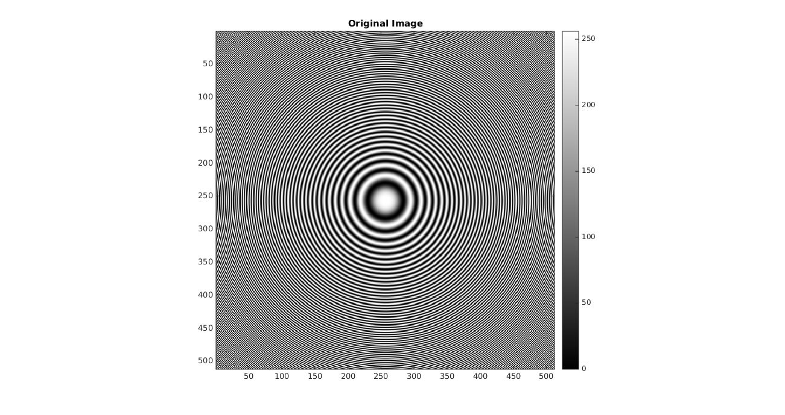
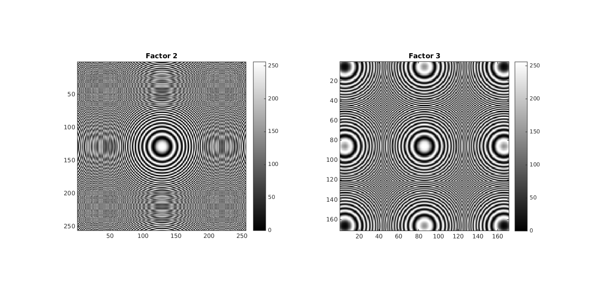
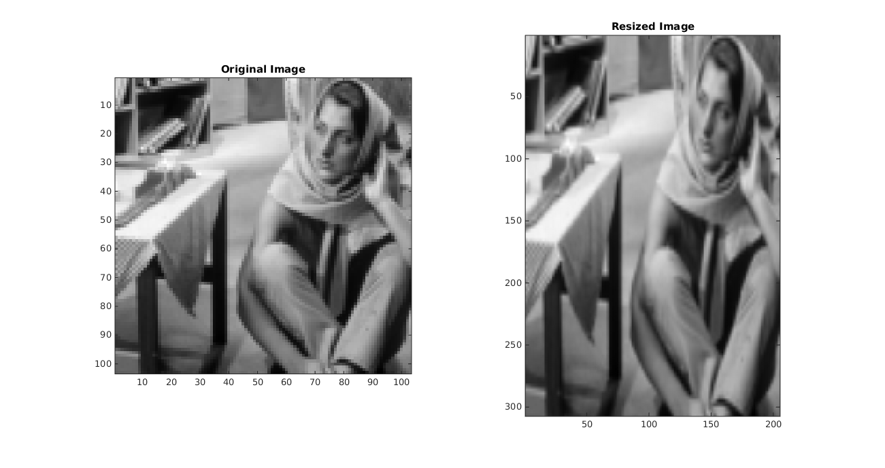

Question 1 Image Resizing
Contents
Image Shrinkg by Factor D
Here the Images are shrinked by a factor of D . To Shrink an Image The Process is As follows
Create a Blank Image result of Size ROW/D,COL/D
for i =1 to ROW/D
for j = 1 to COL/D
result[i][j]=image[D*i][D*j]
end
end
The Moire can be clearly visibile in the shirnked by 2 and shirnked by 3
Image .tic; % Question 1.A Image Shrinking im=imread('../data/circles_concentric.png'); shrinked_im_by_factor_2=myShrinkImageByFactorD(im,2); shrinked_im_by_factor_3=myShrinkImageByFactorD(im,3); imwrite(shrinked_im_by_factor_2,'../images/A/shrinked_im_2.jpg'); imwrite(shrinked_im_by_factor_3,'../images/A/shrinked_im_3.jpg'); figure; colormap(gray(256)); image(im) title('Original Image') axis image; colorbar; set(gcf, 'Units', 'Normalized', 'OuterPosition', [0 0 1 1]); colormap(gray(256)); figure; colormap(gray(256)); subplot(1,2,1),image(shrinked_im_by_factor_2) title('Factor 2') axis image colorbar; subplot(1,2,2),image(shrinked_im_by_factor_3) title('Factor 3') axis image colorbar; set(gcf, 'Units', 'Normalized', 'OuterPosition', [0 0 1 1]); toc;
Elapsed time is 2.839714 seconds. 
Image Enlargement Using Biliniear Interpolation
Here we consider for our image the number of rows as M and the number of columns as N .Resize the image to have the number of rows = 3M-2 and Number of columns 2N-1
Here to Achieve Bilinear Interpolation we do the following
Create a Blank image result with size 3M-2 and 2N-1
For each pixel p in image
fill value of p from image to result (3i-2 , 2j-1)
endAfter this step result will be like
| A | o | B |
| o | o | o |
| o | o | o |
| C | o | D | A,B,C,D values are known from original pixels and 'o' are unknown
Now we iterate result over each row | A | x | B |
| o | o | o |
| o | o | o |
| C | x | D |We will fill the 'x's then we will iterate over each column
| A | X | B |
| o | o | o |
| o | o | o |
| C | X | D | now fill column wise the 'o' as ABCD is known and Xs are calculated
in last steptic; % Question 1.B Bilinear Interpolation im=imread('../data/barbaraSmall.png'); resized=myBilinearInterpolation(im); figure colormap(gray(256)); subplot(1,2,1),image(im) axis image title('Original Image') subplot(1,2,2),image(resized) title('Resized Image') axis image truesize; imwrite(resized,'../images/B/barbaraBig.png'); set(gcf, 'Units', 'Normalized', 'OuterPosition', [0 0 1 1]); toc;
Elapsed time is 0.190682 seconds.
Image Enlargement using Nearest-Neighbor Interpolation
Here we consider for our image the number of rows as M and the number of columns as N .Resize the image to have the number of rows = 3M-2 and Number of columns 2N-1
Here We will achive the enlargement using nearest neighbor for the unknown pixel values .
The process followed here is simple
Create blank image result with size 3M-2,2N-1
For each pixel p in image
fill value of p from image to result (3i-2 , 2j-1)
end
For each unknown pixel p in result
pick the nearest value of p and copy that to p
if there is a tie
take the right most pixel
end
endtic; % Question 1.C Nearest Neighbor Interpolation im=imread('../data/barbaraSmall.png'); resized=myNearestNeighborInterpolation(im); figure colormap(gray(256)); subplot(1,2,1),image(im) axis image title('Original Image') subplot(1,2,2),image(resized) title('Resized Image') axis image imwrite(resized,'../images/C/barbaraBig.png'); truesize set(gcf, 'Units', 'Normalized', 'OuterPosition', [0 0 1 1]); toc;
Elapsed time is 0.165457 seconds.